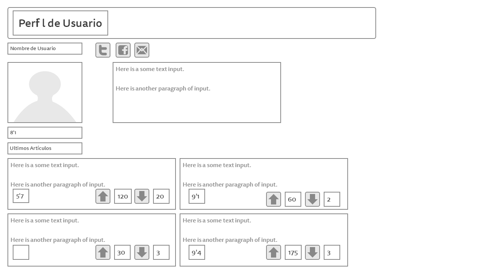
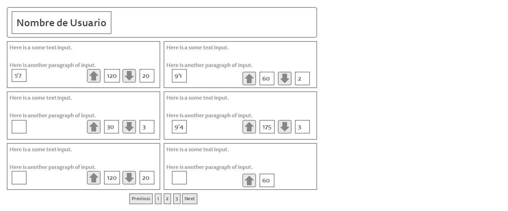
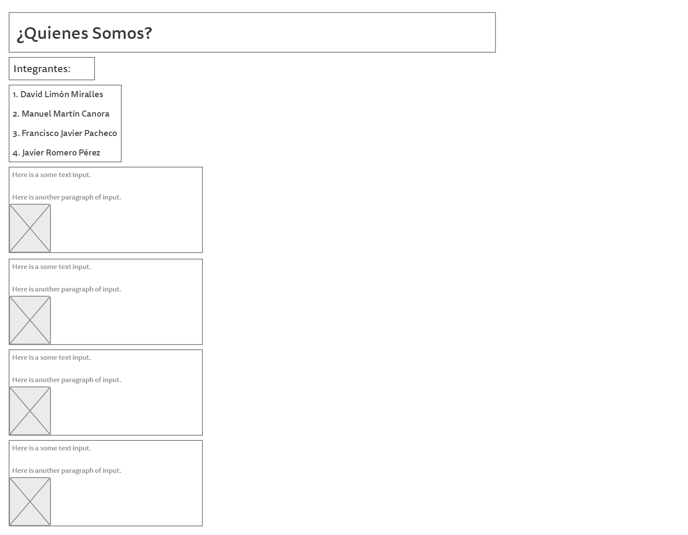

Barra de usuario: Permitirá loguearse si se navega de forma no identificada, o desloguarse en caso contrario. Aparecerá en todas las páginas del sitio, como el pie de página detallado al final.
Segunda barra superior: Contendrá el título de la página, el logotivo y una menú que enlaza a diferentes contenidos de la web, que serán los siguientes:
Juegos: Enlace al catálogo completo de juegos.
Foro: Enlace al foro de la página
Top: Menú desplegable que permite acceder al top de juegos o usuarios
Top juegos: Los juegos mejor valorados por los usuarios de cada género. Listados por orden de calificación.
Top usuarios: Se mostrarán los usuarios mejor valorados ordenados por la valoración media que hayan recibido en sus aportaciones.
Sube tu contenido: Enlace al formulario concreto para aportar contenido.
Quiénes somos: Página estática que hablará de nosotros y de nuestro proyecto.
Contacta: Formulario para contactar con nosotros
Últimas novedades: Tres secciones grandes que mostrarán contenido destacado de cada una de las secciones mencionadas más adelante. El contenido será elegido por los moderadores de la página, a juzgar por las últimas tendencias del mercado. Dichas secciones son:
Análisis: Análisis más destacados de los juegos más recientes.
Opiniones: Artículos de opinión mejor valorados de los juegos más recientes.
Últimos lanzamientos: Avances de los juegos que estén cerca de ser lanzados al mercado.
Perfil de usuario
Esta página contendrá la información de un usuario específico. La información que se mostrará es:
Foto del usuario
Nombre
Información del usuario
Valoración media del usuario
Últimas aportaciones: contendrá los últimos cuatro artículos subidos por el usuario. Al hacer click en Últimas aportaciones se abrirá otra página que contendrá todas las aportaciones del usuario ordenadas cronológicamente.


Contacta
Contendrá un formulario para contactar con nosotros.
Foro
En la portada aparecerán los hilos con comentarios más recientes, nombre del hilo, quién ha iniciado el debate y quién ha sido el último en aportar un comentario, junto a la fecha y hora del mismo.
Top juegos
Una lista con los videojuegos mejor valorados. Aparecerá un Top 5 por cada género. El título del juego es un link a la página del mismo.
Top usuarios
Una lista con los usuarios mejor valorados. Aparecerán los 100 usuarios mejor valorados, divididos en 10 páginas de 10 usuarios cada uno. El nombre de cada usuario será un link a su perfil. Además se incluirá un link a su aportación mejor valorada.
Quiénes somos
Descripción de quiénes son los creadores de la web, el motivo por el cual se crea la página y otra información relevante.

Sube tu contenido
Los usuarios podrán participar en el contenido de la web. Podrán subir un análisis o un artículo de opinión, y podrán valorar el contenido de otros usuarios. Los que cumplan los requisitos serán subidos a la web para formar parte del contenido.
Últimos lanzamientos
Listado de los últimos videojuegos cercanos a salir. Aparece el título (linkado a la página donde puede verse un avance completo) y una breve descripción del contenido. También aparecerá la fecha de salida, género y platadormas disponibles. Tendrá la misma estructura de la lista de juegos completa (Detallada más abajo) pero con el campo nota vacío.
Juegos
El listado de juegos será completo, ordenado por orden alfabético y contendrá, para cada uno, su portada, género, consolas disponibles, fecha de lanzamiento, valoración media de los usuarios (si ya está en el mercado) y una breve sinopsis del mismo. Clickando en el nombre se enlazará a su página principal, detallada a continuación. Dicha lista será de 10 juegos por página.
La página principal de un juego mostrará el contenido más destacado de cada tipo de artículo (mejores análisis y mejores opiniones). Después contendrá dos listas, uno para cada tipo de artículo, cuyo factor de ordenación puede elegirse (orden cronológico o por puntuación de los usuarios, en orden ascendente o descendente).
Análisis y opiniones
Son dos páginas independientes cuya estructura será idéntica:
Artículos destacados: Los dos artículos con mejor valoración por parte de los usuarios aparecerán en la parte más visible de la página.
Lista de artículos: Una lista de ocho artículos por página mostrará el artículo con mejor valoración de cada juego que haya recibido, al menos, un artículo. El orden de aparición será la fecha de lanzamiento del título, apareciendo los primeros los videojuegos más actuales.
En ambos casos aparecerá quién ha escrito el artículo, como se aprecia en la imagen, así como la valoración recibida en forma de votos positivos y negativos. En el caso particular de los análisis aparecerá la nota otorgada por el usuario.
Ahora se muestra el formato que tendría un artículo concreto.
Pie de página
En cada página del sitio se visualizará un pie de página con información adicional sobre el sitio, además de contener unos cuantos enlaces a nuestras redes sociales.